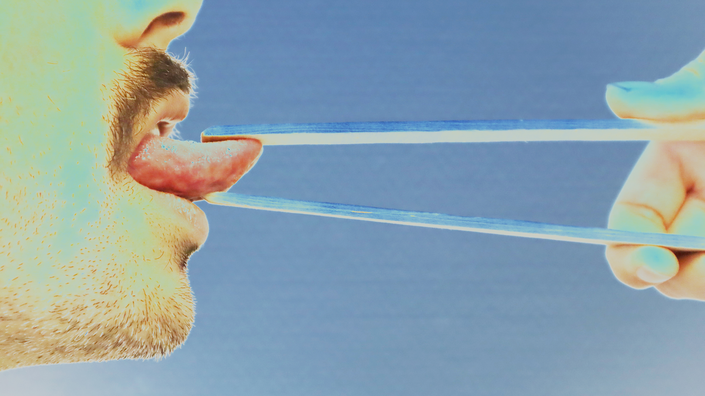

Evicshen is the nom de guerre of sound artist, experimental music performer, and inventor Victoria Shen (she/her). Based in San Francisco, Shen's sound practice is  concerned with the spatiality/physicality of sound and its relationship to the human body. Her music features analog modular synthesizers, vinyl/resin records, and self-built electronics. Shen's music eschews conventions in harmony and rhythm in favor of extreme textures and gestural tones.
Shen is notably the inventor of Needle Nails,  acrylic nails with embedded turntable needles allowing her to play up to 5 tracks of a record at once. Shen's DIY approach extends beyond just instruments but also music releases. Her debut LP, Hair Birth, features copper album art that transforms the cover into a loudspeaker through which the record can be played. Recently, Shen has started releasing hand-made resin records embedded with found materials, each piece functions not only as playable music media but as unique art objects.
acrylic nails with embedded turntable needles allowing her to play up to 5 tracks of a record at once. Shen's DIY approach extends beyond just instruments but also music releases. Her debut LP, Hair Birth, features copper album art that transforms the cover into a loudspeaker through which the record can be played. Recently, Shen has started releasing hand-made resin records embedded with found materials, each piece functions not only as playable music media but as unique art objects.
https://evicshen.com https://evicshen.bandcamp.com https://soundcloud.com/evicshen https://www.instagram.com/evicshen
https://www.youtube.com/watch?v=FWiw80vWuOo https://www.youtube.com/watch?v=6dPpZchcsNA https://www.youtube.com/watch?v=lKexAdvdNqw
Lukas König studied at Gustav Mahler Konservatorium in Vienna, Anton-Bruckner University in Linz and HKB in Bern. He was given the "Hans Koller Price - New York Scolarship" in 2009, the Bremen Jazzpreis and Bawag P.S.K. Next Generation Award in 2014 (with Kompost3). Klangforum Wien premiered his composition Stereogram1 at Konzerthaus Vienna in 2018 and in 2021 he was chosen to be artist of the Shape Network. In addition to performances at festivals worldwide he collaborated with Reggie Washington, Malcolm Braff, Steven Bernstein, Kazuhisa Uchihashi, Audrey Chen, Moormother, Dorian Concept, Peter Kutin, Elliott Sharp, Elvin Brandhi, Bilderbuch, Martin Siewert, Franz Hautzinger, Otto Lechner, Koenigleopold, 5KHD, Klangforum Wien and many more.
Using electronics and pedals along with his cymbal, König lets his imagination fly, leading to fascinating juxtapositions between tracks and sometimes even inside them. Despite the stylistic whiplash, Koening manages to instill his music with a sense of purpose, never blasting forward blindingly or tripping over himself to find a new sound. As a result, static churn, whirring spasms and terrifying echoes are like branches of the same highly-engaging musical tree.
https://lukaskoenig.com https://koenig.bandcamp.com https://www.instagram.com/lukas________koenig
https://www.youtube.com/watch?v=2Z_Q6xhJUOw https://www.youtube.com/watch?v=TAzU6ZVFuJw https://www.youtube.com/watch?v=8WNIa8VgDRY
Andrea Corradi is a multimedia artist actively working on his Master's Degree at Interface Cultures. With a background in computer music and real time composition, his work explores areas such as human computer interaction and sound spatialisation.
The research he has undertaken brought him to work with different collectives on compositions, installations and web based projects. His current interests dive into the audiovisual realm, focussing on the perception of rhythmic and geometric patterns arising through code based work.
https://andreacorradi.net https//dhjrecords.bandcamp.com/track/jelly-violation https://soundcloud.com/1178162388/murcielago-stereo-mix https://soundcloud.com/halcyon-veil/andrea-corradi-mixover-hvmix024
Catrin Manoli a.k.a. Cooky graduated from the sculpture and painting master class at the Ortweinschule in Graz and is now studying experimental art in Linz. As a failed taxidermist, her living room is on the train. Always front row in the mosh pit, at a significant one meter fifty, she actively makes a radical statement against right-wing and colonialist structures. In her live sets she uses noisy sounds and presents preserved dead animals to create a horror show of confrontation that questions speciesism and our transience as human animals. Her DJ sets under the pseudonym Habibiti are a secret under the star sign "Surprise".
https://www.instagram.com/cooky.a.k.a
Tickets: pre-sale 12 Euros / box office 15 Euros
A: qujOchÖ, Waldeggstraße 116, 4020 Linz
A: qujOchÖ, Waldeggstraße 116, 4020 Linz
A: qujOchÖ, Waldeggstraße 116, 4020 Linz
A: qujOchÖ, Waldeggstraße 116, 4020 Linz
A: qujOchÖ, Waldeggstraße 116, 4020 Linz
A: qujOchÖ, Waldeggstraße 116, 4020 Linz